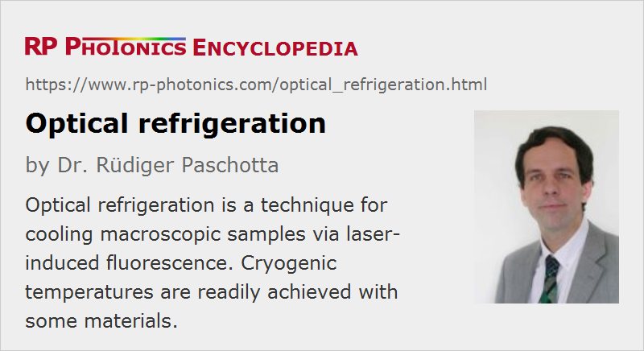

Optical Refrigeration
Definition: a technique for cooling macroscopic samples via laser-induced fluorescence
Alternative terms: laser refrigeration, anti-Stokes fluorescent cooling
German: optische Kühlung
Categories: quantum optics, methods
How to cite the article; suggest additional literature
Author: Dr. Rüdiger Paschotta
Optical refrigeration (also called laser refrigeration or anti-Stokes fluorescent cooling) is a technique for cooling a macroscopic crystal (or a piece of glass) with a laser beam. The crystal must be doped, e.g. with ytterbium or thulium ions, which are excited by the laser beam. The laser wavelength is chosen such that it is longer than the average wavelength of the resulting fluorescence. This means that the energy of the absorbed photons is lower than the average energy of the emitted photons, so that energy is removed from the crystal. Of course, it is essential that the quantum efficiency of the fluorescence is high, and that nearly all fluorescence light can leave the crystal without being absorbed, e.g. by impurities: a single absorbed photon would offset the cooling effect of many other photons.
Cooling a piece of ZBLAN glass in a “laser fridge” from room temperature down to 208 K has been demonstrated [2], and 110 K have been achieved with Yb:LiYF4 (Yb:YLF) [7]. In theory, even temperatures of the order of 77 K (liquid nitrogen) should be reachable. Certain ytterbium-doped crystal materials, particularly tungstates such as Yb:KGW = Yb:KGd(WO4)2, appear to be suitable for this purpose.
Possible applications of laser refrigeration are the replacement of Stirling coolers and the like (avoiding moving parts, vibrations, etc.), but also radiation-balanced lasers, where the internal heat generation is essentially compensated by optical refrigeration.
It is instructive to consider entropy changes associated with laser refrigeration. The reduction in thermal entropy of the cooled device is more than compensated by the increase in entropy which arises from the conversion of narrow-band focused laser light into fluorescence light, which has a much higher entropy due to the many spatial modes and different frequencies involved in the emission.
See also the article on laser cooling, which deals with the cooling of microscopic particles, rather than macroscopic samples. The physical principles behind such cooling methods are rather different from those of optical refrigeration.
Questions and Comments from Users
Here you can submit questions and comments. As far as they get accepted by the author, they will appear above this paragraph together with the author’s answer. The author will decide on acceptance based on certain criteria. Essentially, the issue must be of sufficiently broad interest.
Please do not enter personal data here; we would otherwise delete it soon. (See also our privacy declaration.) If you wish to receive personal feedback or consultancy from the author, please contact him e.g. via e-mail.
By submitting the information, you give your consent to the potential publication of your inputs on our website according to our rules. (If you later retract your consent, we will delete those inputs.) As your inputs are first reviewed by the author, they may be published with some delay.
Bibliography
| [1] | P. Pringsheim, “Zwei Bemerkungen über den Unterschied von Lumineszenz und Temperaturstrahlung”, Z. Phys. 57, 739 (1929), doi:10.1007/BF01340652 |
| [2] | R. I. Epstein et al., “Observation of laser-induced fluorescent cooling of a solid”, Nature 377, 500 (1995), doi:10.1038/377500a0 |
| [3] | S. R. Bowman and C. E. Mungan, “New materials for optical cooling”, Appl. Phys. B 71, 807 (2000), doi:10.1007/s003400000416 |
| [4] | J. Thiede et al., “Cooling to 208 K by optical refrigeration”, Appl. Phys. Lett. 86, 154107 (2005), doi:10.1063/1.1900951 |
| [5] | M. Sheik-Bahae and R. I. Epstein, “Optical refrigeration”, Nature Photon. 1, 693 (2007), doi:10.1038/nphoton.2007.244 |
| [6] | D. V. Seletskiy, “Laser cooling of solids to cryogenic temperatures”, Nature Photon. 4 (3), 161 (2010), doi:10.1038/nphoton.2009.269 |
| [7] | D. V. Seletskiy et al., “Local laser cooling of Yb:YLF to 110 K”, Opt. Express 19 (19), 18229 (2011), doi:10.1364/OE.19.018229 |
See also: fluorescence, laser cooling, quantum efficiency, radiation-balanced lasers
and other articles in the categories quantum optics, methods
|  |
If you like this page, please share the link with your friends and colleagues, e.g. via social media:
These sharing buttons are implemented in a privacy-friendly way!